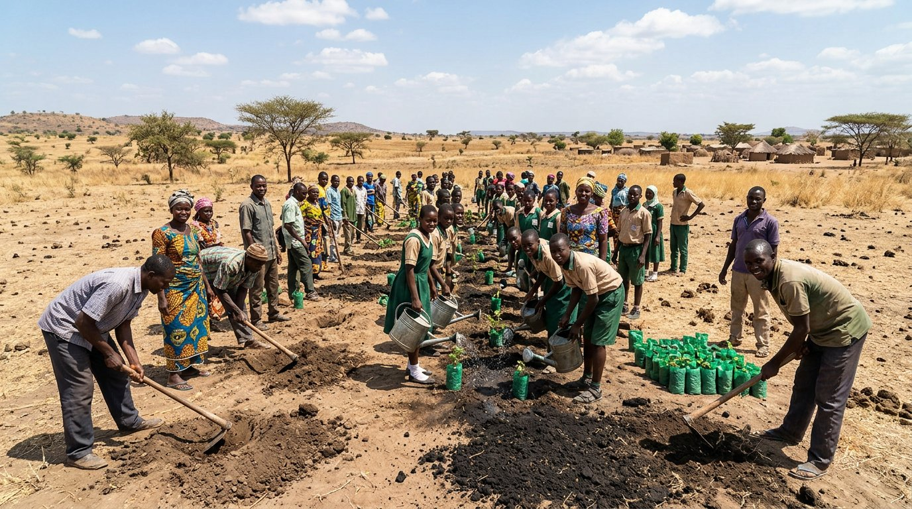

FlagshipGombe Goes Green (3G) Initiative
Statewide tree planting, urban greening and shelterbelt establishment, with school green clubs and nursery enterprises for youth and women. Over five million trees planted to date.
Annual target progress: 78%